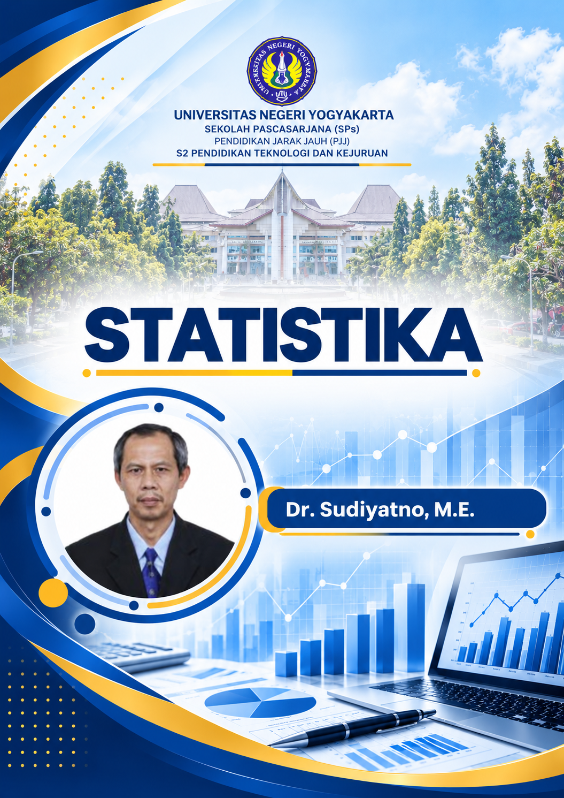
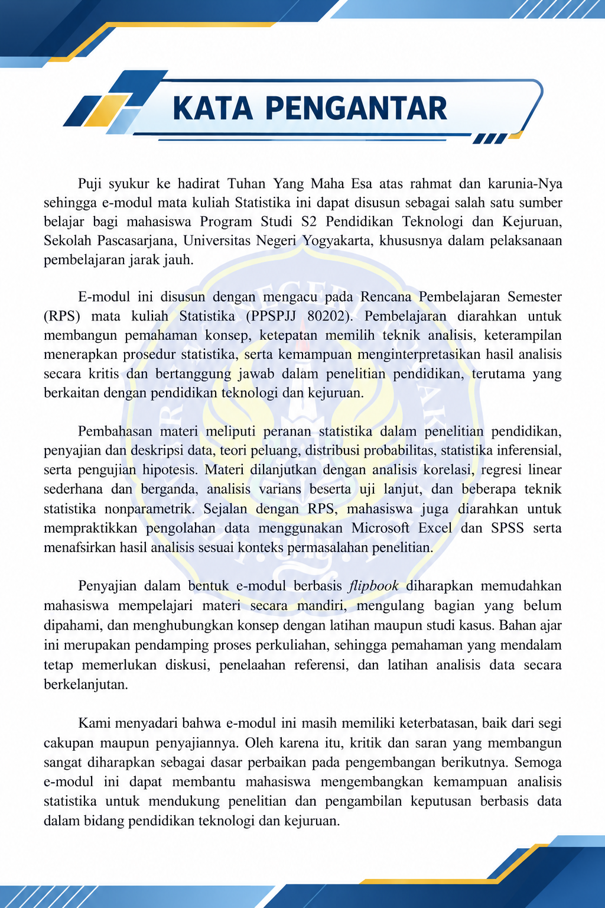

VIDEO PEMBELAJARAN
Putar video langsung di halaman buku. File video disimpan di dalam paket sehingga dapat diputar offline.
Halaman video · sumber: proyek eXeLearning
Halaman berikutnya
Materi selanjutnya belum diisi dalam berkas eXeLearning yang diterima.
Tambahkan isi materi pada pembaruan berikutnya.